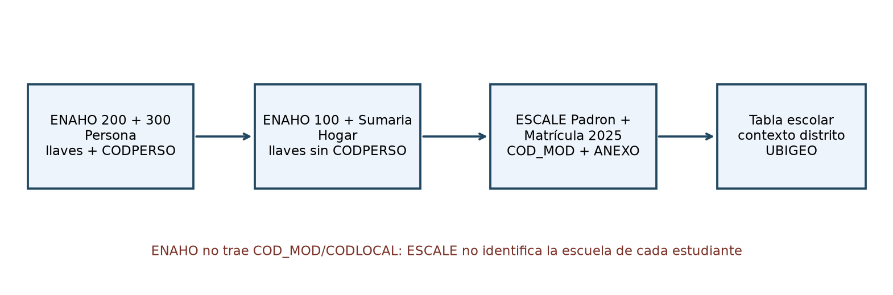
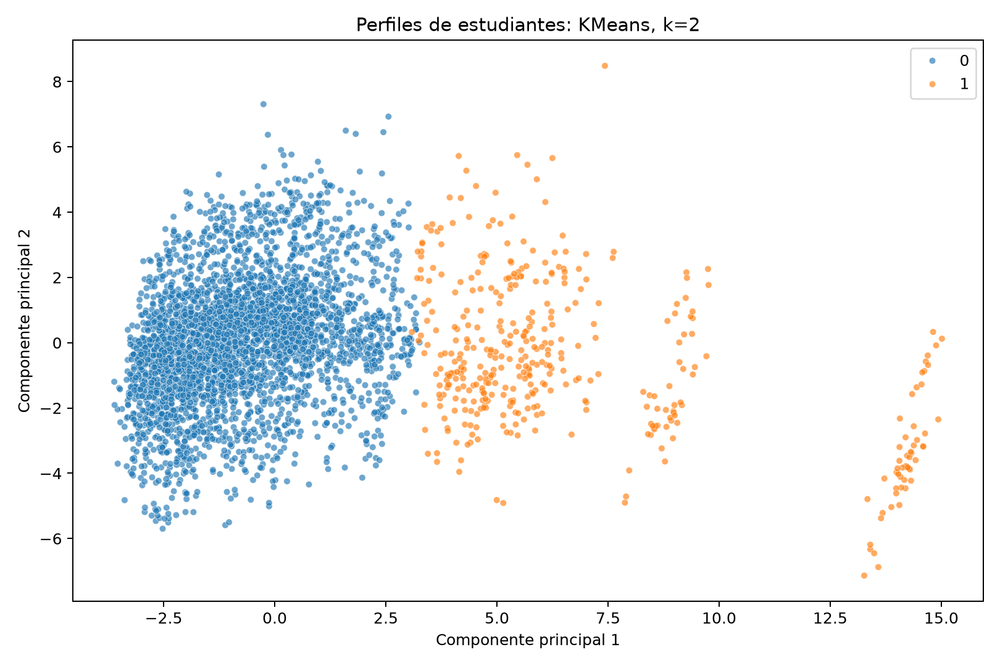
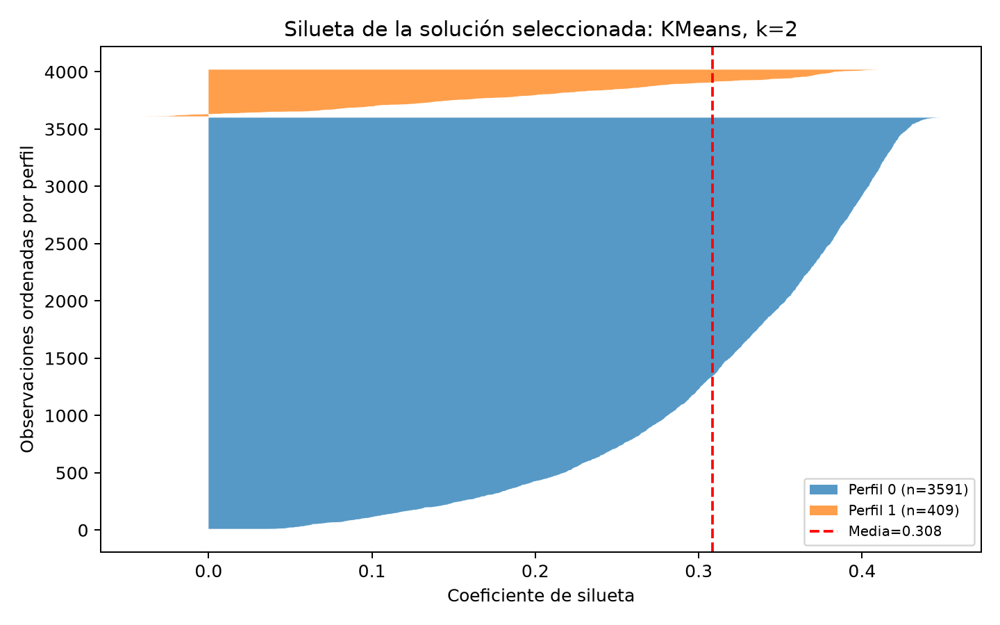
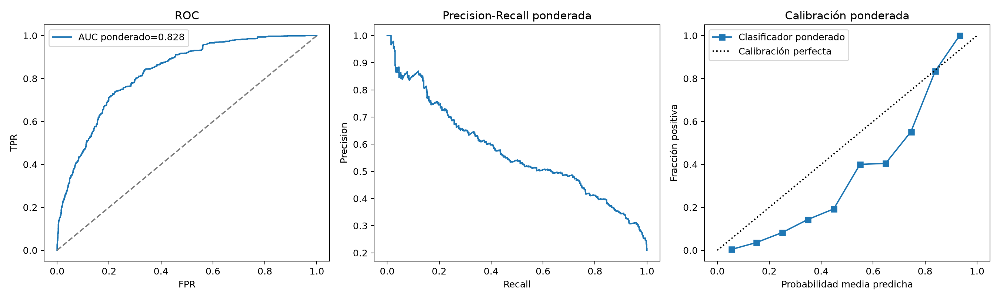
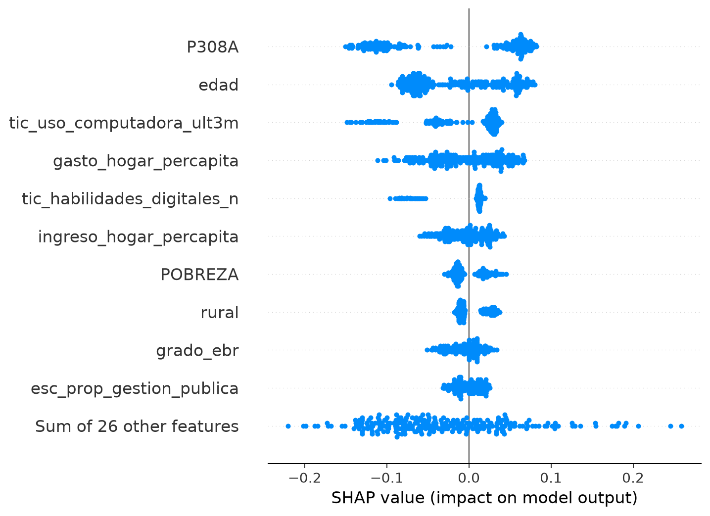
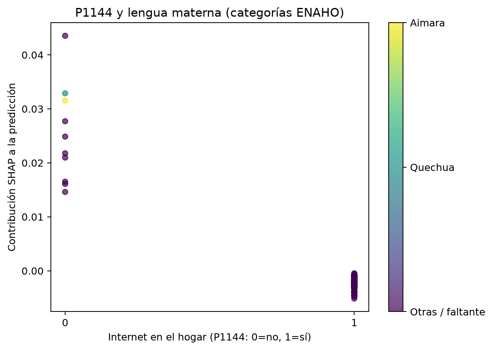
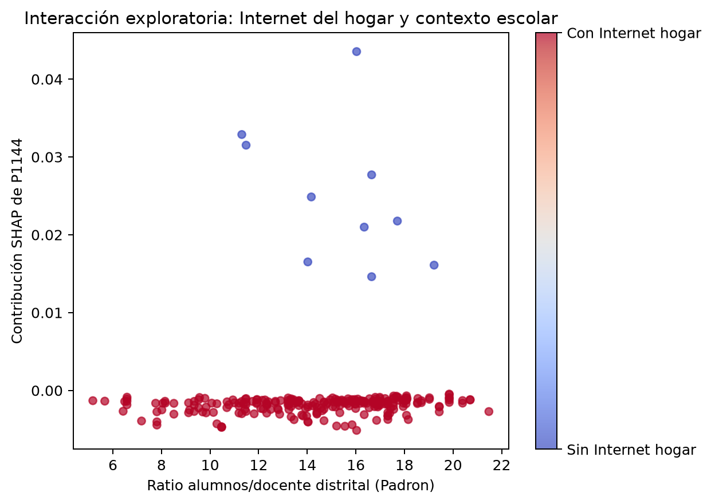
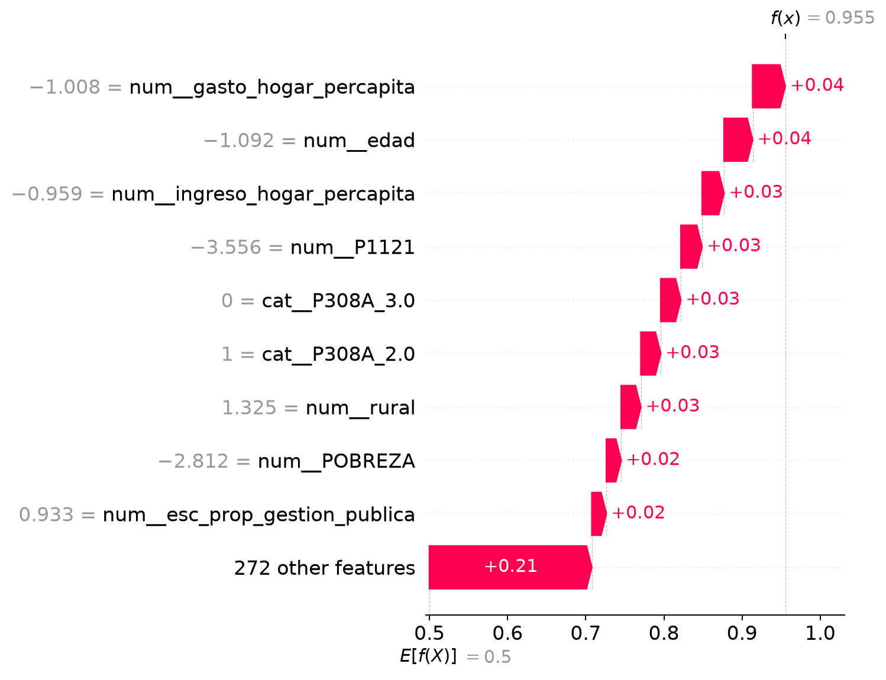
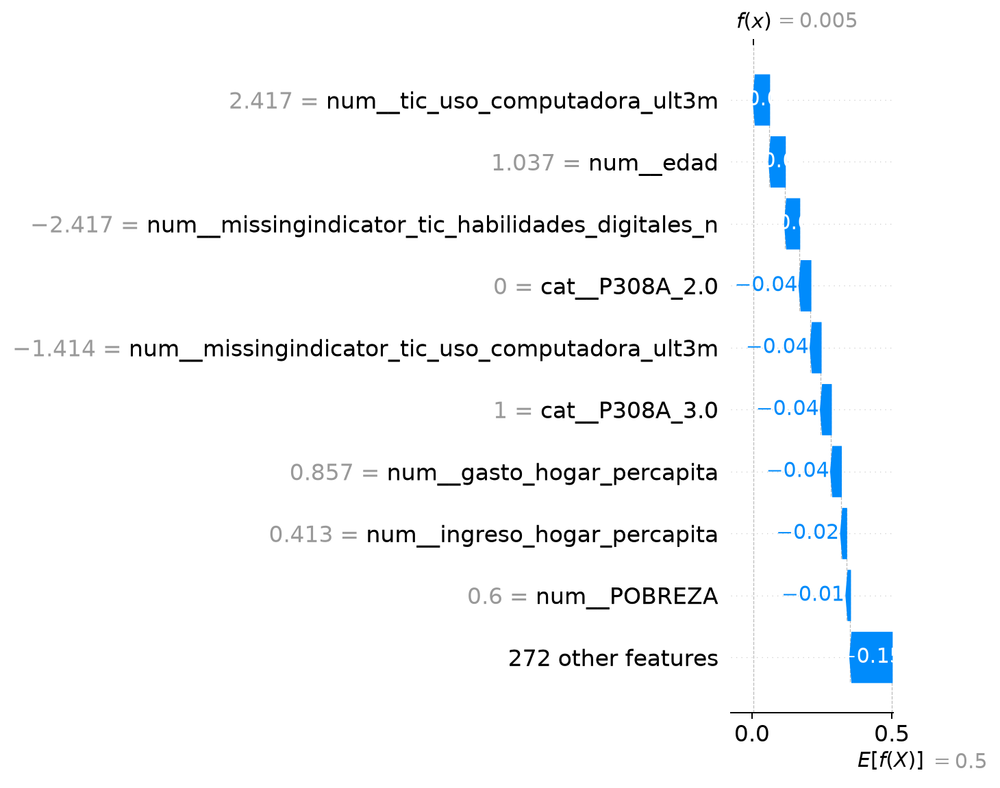

Informe técnico tipo artículo científico · Corte de datos: ENAHO 2025 · Semilla: 42
Este estudio construye un pipeline reproducible para integrar microdatos de hogares y personas de la Encuesta Nacional de Hogares (ENAHO) 2025 con información del padrón escolar ESCALE disponible en la carpeta de trabajo. La población analítica está conformada por personas de 6 a 17 años con asistencia escolar reportada y dato válido sobre uso de Internet. Se define un indicador observable de exclusión de uso digital como no haber utilizado Internet durante el mes anterior. La ejecución produjo 17,992 observaciones, 4,116 conglomerados y una prevalencia de resultado positivo de 25.6%. Se comparan perfiles no supervisados mediante K-Means y agrupamiento aglomerativo, y cuatro clasificadores mediante validación cruzada GroupKFold y prueba aislada por conglomerado. La mejor media de validación cruzada corresponde a RandomForest; en la prueba agrupada obtuvo ROC-AUC=0.828, PR-AUC=0.571 y F1 macro=0.712. La interpretación debe circunscribirse al uso reciente de Internet: no equivale a una medición directa de competencias digitales ni identifica efectos causales.
Palabras clave: brecha digital; educación; ENAHO; ESCALE; aprendizaje automático; validación agrupada; explicabilidad.
El acceso y uso de tecnologías de información pueden condicionar las oportunidades educativas, especialmente en hogares con menores recursos y en ámbitos rurales. Para orientar la priorización de intervenciones es necesario describir de manera conjunta las características de los escolares, sus hogares y el contexto de oferta educativa. La guía del proyecto propone integrar información ENAHO y ESCALE, descubrir tipologías con aprendizaje no supervisado y evaluar modelos predictivos con prevención explícita de fuga de información.
El objetivo de este análisis es construir y documentar un flujo verificable de preparación, caracterización, clasificación y explicación algorítmica con los archivos que estaban disponibles al ejecutar el proyecto. La pregunta predictiva concreta es: entre escolares asistentes de 6 a 17 años con respuesta válida, ¿qué tan bien pueden ordenarse los casos según no haber usado Internet el mes previo usando características observadas de la persona, el hogar y el distrito? Esta formulación evita presentar como variable observada una noción más amplia de competencia digital que los archivos no miden.
Se leyeron los módulos ENAHO 100 (vivienda/hogar), 200 (miembros), 300 (educación y TIC) y Sumaria 2025. El módulo personal se restringió a edades de 6 a 17 años y se enlazó por AÑO, MES, CONGLOME, VIVIENDA, HOGAR, UBIGEO y CODPERSO. Los archivos de hogar se enlazaron por las mismas llaves sin CODPERSO. Antes de unir, se preservaron como texto las llaves y los códigos geográficos para conservar ceros a la izquierda; la lectura usa codificación Latin-1 y convierte las celdas compuestas únicamente por espacios en valores ausentes. Los cruces tienen validaciones de cardinalidad para evitar duplicaciones silenciosas.
El padrón Padron.dbf se convirtió a registros tabulares y se resumió por UBIGEO. Se calcularon conteos y sumas de instituciones, alumnos, docentes y secciones; proporción administrativa pública; medias de coordenadas del padrón cuando son numéricas; y ratio alumnos/docente. La matrícula 2025 se enlazó al padrón por COD_MOD + ANEXO y se agregó por UBIGEO; la cobertura de ese cruce está en la auditoría. El Padlocal.dbf existente se incorporó para contar locales educativos por UBIGEO y auditar CODLOCAL contra Padron.dbf; no aporta coordenadas numéricas ni altitud. ENAHO tampoco tiene COD_MOD/CODLOCAL, así que ESCALE caracteriza el distrito y no la institución de cada estudiante. Los archivos existentes no permiten añadir altitud, equipos informáticos o conectividad escolar: no se imputan ni infieren.
El esquema de integración es: Módulo 200 + Módulo 300 por llaves de persona → Módulo 100 + Sumaria por llaves de hogar → indicadores ESCALE por UBIGEO → tabla analítica filtrada por edad, asistencia y respuesta TIC.

El resultado binario exclusion_digital vale 1 cuando P314A=2 (no usó Internet durante el mes anterior) y 0 cuando P314A=1. Se incluyen solamente casos con P307=1 (asistencia reportada) y P314A válido. La prevalencia observada en la muestra analítica es 25.6%. Se construyeron ingreso y gasto del hogar por miembro, ruralidad derivada del estrato, indicadores de agua potable, red pública de agua y saneamiento, electricidad doméstica, años de rezago escolar con edades normativas de primaria y secundaria, y características distritales de ESCALE. Los predictores categóricos y continuos se documentan en el diccionario de variables generado con el dataset.
Se incorporaron P314B (lugares de uso), P314D (frecuencia), P316 (propósitos), P316B (uso reciente de computadora/tablet) y P316C1–P316C10 (tareas informáticas que sirven como aproximación de habilidades digitales). Las distribuciones por código, faltantes y porcentajes ponderados se guardan en outputs/tables/resumen_variables_tic_enaho.csv. P314B y P316 se describen, y P314D se usa además como variable de perfilamiento no supervisado (0=no uso; 1–4=frecuencia observada). Las tres quedan excluidas de los predictores de clasificación por su condicionamiento al uso de Internet y riesgo de fuga. P316B y el conteo de tareas P316C se exploran como predictores, con imputación y marcadores de faltante dentro del pipeline. Este conteo representa tareas declaradas, no una certificación de competencia.
Los códigos se cotejaron con el Diccionario ENAHO 2025 disponible en el proyecto. P1121 representa electricidad doméstica y no se interpreta como Internet. El tratamiento de faltantes se evidencia en outputs/tables/diccionario_variables.csv (porcentaje por variable), resumen_variables_tic_enaho.csv (N válido y faltante por ítem) y el SimpleImputer(add_indicator=True) ajustado dentro de cada fold. En P316B y en el conteo P316C hay faltantes altos, consistentes con preguntas condicionadas y saltos del cuestionario; no se interpretan como respuesta "no". El pipeline conserva el faltante, añade el indicador correspondiente y lo imputa dentro de cada fold.
| Variable analítica | Faltantes (%) |
|---|---|
| variable | faltantes_pct |
| :---------------------------- | ----------------: |
| P1144 | 0.0 |
| P314A | 0.0 |
| P314D | 25.6 |
| agua_potable | 16.7 |
| esc_matricula_primaria_2025 | 0.0 |
| esc_n_locales_padlocal | 0.0 |
| esc_ratio_alumno_docente | 0.0 |
| rezago_escolar_anios | 4.1 |
| saneamiento_red_publica | 0.0 |
| tic_frecuencia_uso_cluster | 0.0 |
| tic_habilidades_digitales_n | 85.6 |
| tic_uso_computadora_ult3m | 66.6 |
Se fijó random_state=42. Un GroupShuffleSplit aisló el 20% de los datos por CONGLOME para prueba. Dentro del conjunto de entrenamiento se utilizó GroupKFold con hasta tres folds, de forma que observaciones del mismo conglomerado no aparezcan a la vez en ajuste y validación. La imputación mediana/moda, el escalado y la codificación one-hot están encapsulados en un Pipeline y se ajustan de nuevo dentro de cada fold. P307 y P314A se excluyeron de la matriz de predictores, pues se usan para determinar la población o el objetivo. Las clases se balancean mediante class_weight cuando el estimador lo admite y FACTOR07 pondera el ajuste y los estimadores/métricas con soporte.
La comparación incluye regresión logística balanceada como línea base, Random Forest, Extra Trees e HistGradientBoosting. Para los tres modelos avanzados se compara una cuadrícula pequeña de hiperparámetros candidatos mediante GroupKFold ponderado; FACTOR07 pondera el ajuste y las métricas. En cada fold se calculan ROC-AUC, PR-AUC y F1 macro ponderados; outputs/tables/cv_groupkfold_modelos.csv conserva los resultados por fold, tamaño de muestra, número de conglomerados y prevalencia. Se generan matrices de confusión (conteos y ponderada), curvas ROC/PR, calibración ponderada y Brier score. auditoria_split_conglomerado.json demuestra cero conglomerados compartidos entre entrenamiento y prueba. El test por conglomerado permanece aislado durante la selección.
La muestra reproducible de hasta 4 000 observaciones se transforma con imputación, escalado y codificación. Las métricas se calculan en los primeros 20 componentes principales y la figura presenta dos componentes; la varianza explicada queda en outputs/tables/pca_varianza.csv. Se probaron K-Means y AgglomerativeClustering para k=2…6, y la solución seleccionada también se muestra con su gráfico de silueta. UBIGEO se excluyó para que el clustering no forme perfiles por código distrital. Las variables incluyen ingreso y gasto per cápita, ratio alumnos/docente distrital, frecuencia TIC ordinal (P314D; 0 para no uso), años de rezago y servicios básicos. P314D entra solo al clustering; permanece excluida de predictores supervisados por ser una pregunta condicionada al uso. Los nombres exploratorios comparan ruralidad y no uso con el promedio analítico y se respaldan con las medias de la tabla, sin validación externa.
| Algoritmo | k | Silhouette | Davies–Bouldin | Calinski–Harabasz |
|---|---|---|---|---|
| algoritmo | k | silhouette | davies_bouldin | calinski_harabasz |
| :-------------- | ----: | -------------: | -----------------: | --------------------: |
| KMeans | 2 | 0.307 | 1.407 | 750.359 |
| Agglomerative | 2 | 0.212 | 1.808 | 595.688 |
| KMeans | 3 | 0.123 | 2.248 | 637.208 |
| Agglomerative | 3 | 0.188 | 2.173 | 504.382 |
| KMeans | 4 | 0.135 | 2.055 | 583.150 |
| Agglomerative | 4 | 0.137 | 2.210 | 464.821 |
| KMeans | 5 | 0.138 | 1.904 | 559.107 |
| Agglomerative | 5 | 0.156 | 1.912 | 457.003 |
| KMeans | 6 | 0.137 | 1.867 | 510.019 |
| Agglomerative | 6 | 0.159 | 1.745 | 450.395 |
La composición se describe con conteo de casos y medias observadas, incluyendo ruralidad, Internet del hogar, habilidades declaradas y no uso del mes anterior:
| cluster | nombre_perfil | n | edad | grado_ebr | rezago_escolar_anios | P1121 | P1144 | agua_potable | agua_red_publica | saneamiento_red_publica | MIEPERHO | POBREZA | ingreso_hogar_percapita | gasto_hogar_percapita | esc_n_escuelas | esc_alumnos | esc_n_locales_padlocal | esc_docentes | esc_secciones | esc_prop_gestion_publica | esc_lat_media | esc_lon_media | esc_ratio_alumno_docente | esc_matricula_primaria_2025 | esc_matricula_secundaria_2025 | rural | tic_habilidades_digitales_n | tic_uso_computadora_ult3m | tic_frecuencia_uso_cluster | exclusion_digital |
|---|---|---|---|---|---|---|---|---|---|---|---|---|---|---|---|---|---|---|---|---|---|---|---|---|---|---|---|---|---|---|
| 0 | Mayor ruralidad y no uso cercano al promedio (exploratorio) | 3591 | 11.606 | 3.279 | 0.488 | 0.914 | 0.960 | 0.678 | 0.798 | 0.527 | 4.856 | 2.649 | 8959.325 | 7525.478 | 148.056 | 16304.365 | 86.733 | 962.974 | 910.564 | 0.842 | -9.908 | -75.724 | 14.290 | 6459.769 | 5193.592 | 0.411 | 4.754 | 0.407 | 0.917 | 0.265 |
| 1 | Menor ruralidad y menor no uso reciente (exploratorio) | 409 | 11.885 | 3.372 | 0.458 | 0.998 | 0.961 | 0.979 | 0.890 | 0.883 | 4.966 | 2.667 | 13699.922 | 10957.145 | 862.406 | 129272.342 | 430.714 | 7148.125 | 6214.570 | 0.409 | -11.369 | -77.065 | 17.715 | 50895.100 | 41539.267 | 0.000 | 5.310 | 0.711 | 0.905 | 0.161 |
La mayor prevalencia observada de no uso se registró en el perfil Mayor ruralidad y no uso cercano al promedio (exploratorio) (cluster 0: 26.5%), frente a 16.1% en el perfil de menor prevalencia. Estas diferencias son descriptivas.


Para el modelo seleccionado se generan SHAP beeswarm, dependencia P1144 con la categoría de lengua materna y P1144 con ratio alumnos/docente distrital, además de dos waterfall de casos correctamente clasificados. SHAP explica contribuciones a la salida del modelo y no estima efectos causales.
La prevalencia positiva fue 25.6%, que debe contrastarse con la distribución de clases antes de interpretar accuracy o una única métrica. La clasificación se evaluó con separación por conglomerado y ponderación disponible. La Tabla 2 contiene los resultados calculados en esta ejecución. El modelo con mayor ROC-AUC medio GroupKFold fue RandomForest. Sus métricas en prueba agrupada fueron ROC-AUC=0.828, PR-AUC=0.571 y F1 macro=0.712. La PR-AUC es especialmente informativa si hay desbalance y debe compararse con la prevalencia de la clase positiva.
| Modelo | AUC CV media | DE CV | AUC prueba | PR-AUC | F1 macro | Precisión | Recall |
|---|---|---|---|---|---|---|---|
| modelo | cv_roc_auc_mean | cv_roc_auc_sd | cv_pr_auc_mean | cv_pr_auc_sd | cv_f1_macro_mean | cv_f1_macro_sd | test_roc_auc |
| :---------------------------- | ------------------: | ----------------: | -----------------: | ---------------: | -------------------: | -----------------: | ---------------: |
| RandomForest | 0.819 | 0.011 | 0.586 | 0.007 | 0.711 | 0.002 | 0.828 |
| HistGradientBoosting | 0.818 | 0.013 | 0.589 | 0.013 | 0.712 | 0.005 | 0.835 |
| ExtraTrees | 0.817 | 0.011 | 0.584 | 0.014 | 0.693 | 0.006 | 0.822 |
| LogisticRegression_baseline | 0.804 | 0.009 | 0.559 | 0.020 | 0.681 | 0.003 | 0.812 |

La matriz de confusión y las curvas del modelo ganador se guardan junto al informe. Los falsos negativos representan escolares sin uso reciente de Internet que el modelo no priorizaría; los falsos positivos implican priorizar personas cuyo uso observado sí ocurrió. En una política de focalización, ambos errores tienen costos distintos y el umbral 0.5 no debe considerarse óptimo sin definir esos costos.
En el test agrupado, la matriz de conteos registra 591 falsos positivos y 206 falsos negativos (TN=2,110; TP=678). Con FACTOR07, los falsos positivos suman 185,488.8 y los falsos negativos 74,230.3 en escala ponderada.
La Tabla 1 y los gráficos PCA y de silueta describen la solución seleccionada. Cada perfil recibe un nombre descriptivo derivado de su ruralidad y prevalencia relativa de no uso; la tabla permite contrastar también frecuencia TIC, ingreso/gasto, servicios básicos, rezago y contexto escolar. Son grupos exploratorios, no categorías oficiales ni segmentos de riesgo validados externamente.
Los artefactos SHAP muestran la contribución del modelo a su propia salida sobre los casos analizados. El beeswarm permite comparar importancia y dirección de asociación condicional; las dependencias ilustran relaciones aprendidas que pueden reflejar correlación entre atributos. Los waterfall son explicaciones locales para casos de la muestra de prueba y no deben generalizarse a todos los escolares. Si un artefacto SHAP no está disponible, el estado de generación se registra en outputs/reports/shap_estado.txt.
| Variable original (contribuciones transformadas sumadas) | Media absoluta SHAP |
|---|---|
| variable | mean_abs_shap |
| :---------------------------- | ----------------: |
| P308A | 0.0824 |
| edad | 0.0498 |
| tic_uso_computadora_ult3m | 0.0409 |
| gasto_hogar_percapita | 0.0360 |
| tic_habilidades_digitales_n | 0.0200 |
| ingreso_hogar_percapita | 0.0199 |
| POBREZA | 0.0166 |
| rural | 0.0156 |
| grado_ebr | 0.0146 |
| esc_prop_gestion_publica | 0.0131 |





En la muestra analítica, las preguntas P316C1–P316C10 suman 2,596 respuestas válidas por ítem como máximo; el porcentaje de sí por tarea se informa en resumen_variables_tic_enaho.csv. La suma individual de tareas se utiliza como predictor exploratorio; las no respuestas se conservan como faltantes e imputan dentro de cada fold con indicador de faltante.
Caso alto correctamente clasificado entre los extremos de todo el test (real=1, predicho=1, probabilidad=0.955): las mayores contribuciones positivas que elevaron la salida fueron num__gasto_hogar_percapita (+0.042), num__edad (+0.037), num__ingreso_hogar_percapita (+0.028); las negativas que la redujeron fueron ninguna de las seis mayores. Caso bajo correctamente clasificado entre los extremos de todo el test (real=0, predicho=0, probabilidad=0.005): las mayores contribuciones positivas que elevaron la salida fueron ninguna de las seis mayores; las negativas que la redujeron fueron num__tic_uso_computadora_ult3m (-0.056), num__edad (-0.056), num__missingindicator_tic_habilidades_digitales_n (-0.052).
El flujo combina atributos individuales y domésticos con indicadores contextuales del padrón escolar, y aplica separación geográfica por conglomerado que reduce la posibilidad de que hogares cercanos o del mismo segmento muestral aparezcan a ambos lados de la evaluación. El pipeline de transformaciones evita que estadísticas de imputación, escalado o categorías del test se filtren al entrenamiento. Estas decisiones fortalecen la validez interna de la comparación predictiva.
Los resultados deben leerse con cautela por cuatro razones. Primero, el no uso de Internet en el mes previo no equivale a ausencia de conectividad, habilidades, calidad de conexión o aprendizaje. Segundo, el enlace ESCALE final es distrital; no prueba que el estudiante esté matriculado en una escuela con los valores promedio del distrito. Se incorporó la matrícula oficial Censo Educativo 2025: el cruce interno con el padrón por COD_MOD + ANEXO encontró 54 038 de 54 038 servicios. Los módulos ENAHO 2025 disponibles no tienen COD_MOD ni CODLOCAL, por lo que las variables nuevas describen el contexto distrital, no la escuela del escolar. Tercero, ENAHO es una encuesta con diseño complejo; los pesos se usan cuando el estimador lo admite, pero las métricas reportadas no constituyen necesariamente estimadores oficiales de prevalencia ni incorporan todas las etapas del diseño muestral. Cuarto, una asociación predictiva no identifica el efecto de ampliar infraestructura o entregar dispositivos.
La validez externa requiere repetir el análisis en otra muestra o edición. P316C permite describir tareas informáticas declaradas, pero no sustituye una evaluación de competencia digital ni de aprendizaje. Los archivos ESCALE existentes no contienen datos utilizables de altitud, equipos y conectividad escolar para este análisis; esos factores quedan como limitación explícita.
data/raw/Diccionario_ENAHO_2025.pdf, edición mayo 2026): https://proyectos.inei.gob.pe/iinei/srienaho/Descarga/DocumentosMetodologicos/2025-55/20_Diccionario_2025.pdf.00_Padron.zip y 01_Matricula_01.zip, actualizado en el catálogo el 23/01/2026): https://escale.minedu.gob.pe/uee/-/document_library_display/GMv7/view/10632985.COD_MOD: identificador del servicio educativo): https://escale.minedu.gob.pe/documents/10156/10632985/00_Diccionario%2Bde%2Bdatos_CE_2025.pdf.Reproducibilidad: código en src/pipeline.py; notebook en notebooks/01_evaluacion_brecha_digital.ipynb; dependencias en requirements.txt; semilla 42. El resumen de datos y la huella de evaluación están en outputs/tables/resumen_ejecucion.json y outputs/models/metadatos_modelo.json.